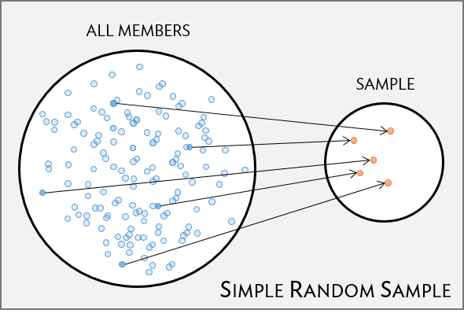
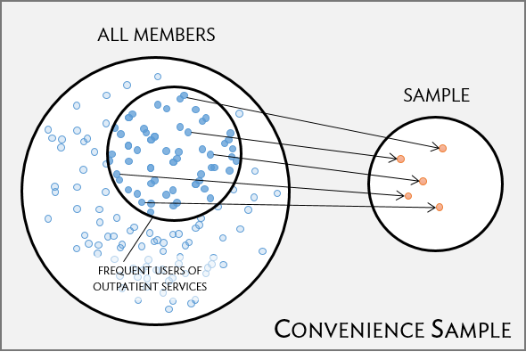
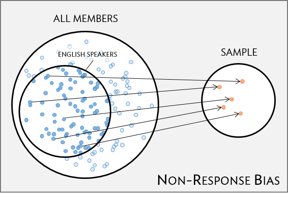
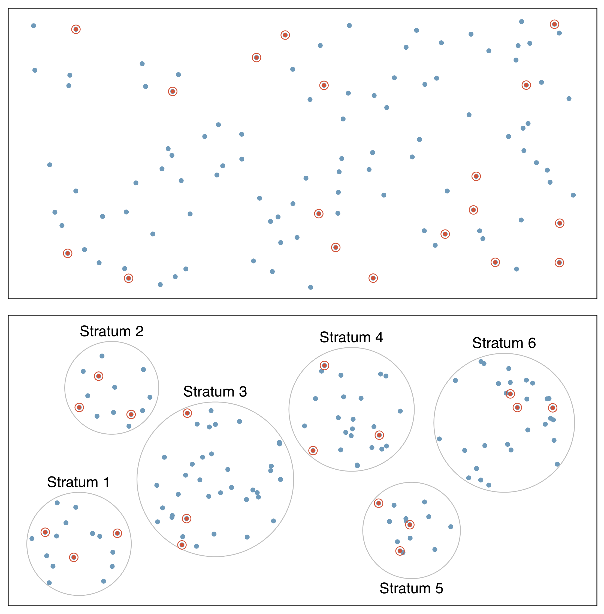
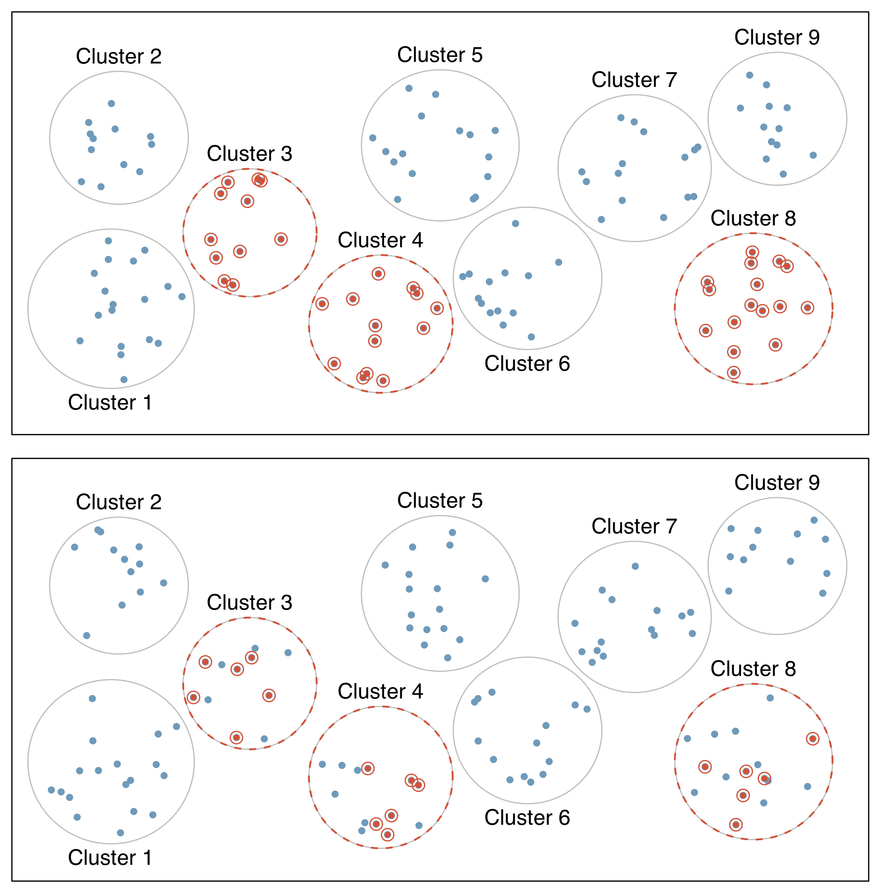
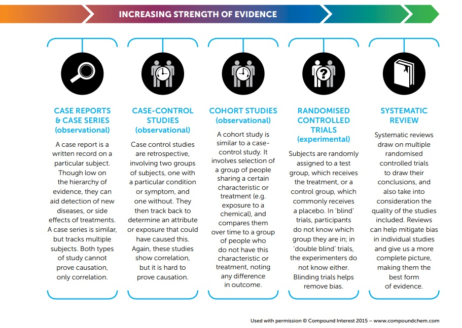

Lesson 1: Data collection
2025-09-29
Learning Objectives
- Define and compare a target population and its sample.
- Explain different sampling methods and understand their advantages.
- Define and compare experiments and observational studies.
Where are we?

Learning Objectives
- Define and compare a target population and its sample.
- Explain different sampling methods and understand their advantages.
- Define and compare experiments and observational studies.
Poll Everywhere Question 1
Asking a question
- Data provide evidence that help us answer questions
- But we need to start with a clearly articulated question
- In this class, we will be working towards articulating our questions and systemically answering them with data
- How do we formulate a clearly articulated question?
Examples of questions
- Do bluefin tuna from the Atlantic Ocean have particularly high levels of mercury, such that they are unsafe for human consumption?
- For infants predisposed to developing a peanut allergy, is there evidence that introducing peanut products early in life is an effective strategy for reducing the risk of developing a peanut allergy?
- Does a recently developed drug designed to treat glioblastoma, a form of brain cancer, appear more effective at inducing tumor shrinkage than the drug currently on the market?
Population vs. sample
(Target) Population
- Group of interest being studied
- Group from which the sample is selected
- Studies often have inclusion and/or exclusion criteria
- Almost always too expensive or logistically impossible to collect data for every case in a population
Sample
- Group on which data are collected
- Often a small subset of the population
- Easier to collect data on
- If we do it right, we might be able to answer our question about the target population
Identifying the target population
Let’s focus on the second research question:
- For infants predisposed to developing a peanut allergy, is there evidence that introducing peanut products early in life is an effective strategy for reducing the risk of developing a peanut allergy?
Poll Everywhere Question 2
Identifying the target population
Let’s focus on the second research question:
- For infants predisposed to developing a peanut allergy, is there evidence that introducing peanut products early in life is an effective strategy for reducing the risk of developing a peanut allergy?
What is the target population here?
Infants predisposed to developing a peanut allergy
We could get more specific with “Infants aged 0 to 5 years old” or “Infants aged 0 to 5 years old who have eczema, egg allergy, or both”
- In this case we are defining exactly how old “infants” are and what “predisposed” means
From target population to sample
Once we have a well articulated target populaton, we have inclusion or exclusion criteria for individuals
Now we can start sampling from our target population…
Learning Objectives
- Define and compare a target population and its sample.
- Explain different sampling methods and understand their advantages.
- Define and compare experiments and observational studies.
Sampling
- Goal is to get a representative sample of the population: the characteristics of the sample are similar to the characteristics of the population
- There are different ways to sample from a target population
- Types of sampling that we discuss
- Simple random sample (SRS)
- Convenient sample
- Stratified sample
- Cluster sample
- Multistage sample
Sampling methods: Basic approaches
Simple random sample (SRS)
- Each individual of a population has the same chance of being sampled
- Randomly sampled
- Considered best way to sample

Convenience sample
- Easily accessible individuals are more likely to be included in the sample than other individuals
- A common “pitfall”

Potential bias with sampling
Good sampling plans don’t guarantee samples representative of the population
Non-response bias
- Are all groups within a population being reached?
- Unrepresentative sample can skew results
- Example: survey only administered in English can lead to non-response bias that under-represents individuals who do not fluently speak English
- Here, bias is stemming from an oversight on the way we are administering our survey (not from the sampling mechanism itself)

Another potential when sampling
“Random” samples can be unrepresentative by random chance
- In a simple random sample (SRS), each case in the population has an equal chance of being included in the sample
- But by random chance alone a random sample might contain a higher proportion of one group over another
- Example: a SRS might by chance include 70% men (unlikely, but theoretically possible)
- If it is important for our data to represent specific groups (to answer our research question), then we may consider more complex sampling methods
Sampling methods (1/2)
- Simple random sample (SRS)
- Each individual of a population has the same chance of being sampled
- Statistical methods taught in this class assume a SRS!
- Stratified sampling
- Divide population into groups (strata) before selecting cases within each stratum (often via SRS)
- Usually cases within a strata are similar, but are different from other strata with respect to the outcome of interest, such as gender or age groups

Sampling methods (2/2)
- Cluster sample
- First divide population into groups (clusters)
- Then sample a fixed number of clusters, and include all observations from chosen clusters
- Clusters are often hospitals, clinicians, schools, etc., where each cluster will have similar services/ policies/ etc.
- Usually cases within clusters are diverse
- Multistage sample
- Similar to a cluster sample, but select a random sample within each selected cluster instead of all individuals
- Stacking random samples: first randomly select clusters, then randomly select individuals within each selected cluster

One setting, different sampling
Let’s say we want to sample students in Oregon with 100 schools and 50,000 students. Our end goal is to measure vaccination status of students. We have evidence that proximity to a health clinic may influence vaccination status.
- Simple random sample: randomly select 1,000 students from all 50,000 students
- Stratified sampling: we create strata based on rural and urban schools, and then we randomly select 500 students from rural schools and 500 students from urban schools
- The thought here is that rural schools are typically further from health clinics
- Cluster sample: randomly select 10 schools, then include all students from those schools
- Multistage sample: randomly select 10 schools, then randomly select 20 students from each selected school
Poll Everywhere Question 3
Learning Objectives
- Define and compare a target population and its sample.
- Explain different sampling methods and understand their advantages.
- Define and compare experiments and observational studies.
Two basic study designs
Experiment
Researchers directly influence how data arise
Such as: assigning groups of individuals to different treatments and assessing how the outcome varies across treatment groups
Three major parts to an experiment
- Control
- Randomization
- Replication
Observational study
Researchers merely observe and record data, without interfering with how the data arise
For example, to investigate why certain diseases develop, researchers might collect data by conducting surveys, reviewing medical records, or following a cohort of many similar individuals.
Often the only available way to study your research question
- Due to ethical considerations, funds, or availability of data
Experiments (1/2)
- Researchers assign individuals to different treatment or intervention groups
- Control group: often receive a placebo or usual care
- Different treatment groups are often called study arms
- Randomization
- Group assignment is usually random to ensure similar (balanced) study arms for all variables (observed and unobserved)
- Randomization allows study arm differences in outcomes to be attributed to treatment rather than variability in patient characteristics
- Treatment is the only systematic difference between groups
- Establish causality
- Different than random sampling! Once we have the sample, then we randomize!!
Experiments (2/2)
- Replication
- Accomplished by collecting a sufficiently large sample
- Results usually more reliable with a large sample size
- Often less variability
- More likely to be representative of population
- Some studies are not ethical to carry out as experiments
Observational studies
- Data are observed and recorded without interference
- Often done via surveys, electronic health records, or medical chart reviews
- Cohorts
- Associations between variables can be established, but not causality
- Individuals with different characteristics may also differ in other ways that influence response
- Confounding variables (lurking variable)
- Variables associated with both the explanatory and response variables
Observational studies: prospective vs. retrospective studies
Some studies can have prospective and retrospective data!
Prospective
- Identifies participants and collects information at scheduled times or as events unfold.
Retrospective
- Collect data after events have taken place, such as from medical records
Example: The Cancer Care Outcomes Research and Surveillance Consortium (CanCORS) enrolled participants with lung or colorectal cancer, collected information about diagnosis, treatment, and previous health behavior (retrospective), but also maintained contact with participants to gather data about long-term outcomes (prospective).
Comparing study designs

Poll Everywhere Question 4
Lesson 1 Slides